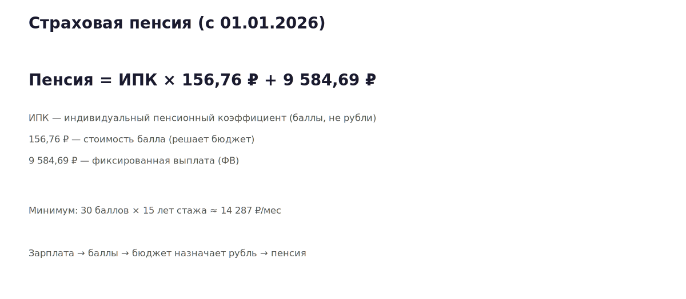
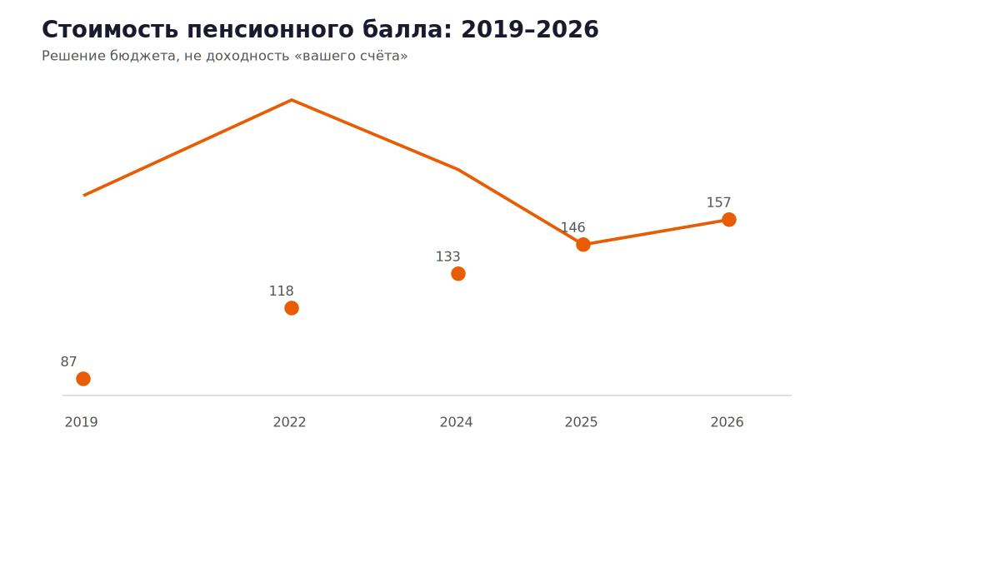
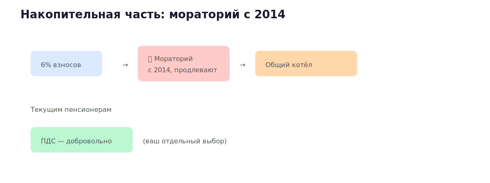
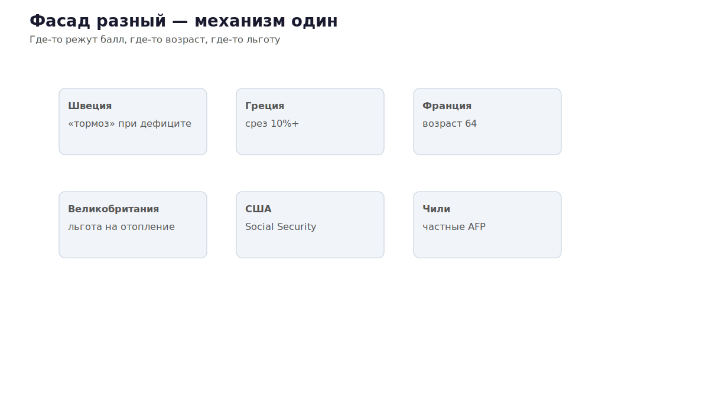

Вы копите баллы, а не рубли. Кто назначает цену — бюджет
Баллы, не рубли (книга v14, § 1.5): 156,76 ₽ за балл и «возраст дожития».
«Сколько на пенсионном счёте?» — звучит как вклад. У большинства — баллы (ИПК) и обещание пересчитать в рубли по правилам года выхода. Это 400-ФЗ, не паранойя.
Выжимка из книги «На пенсию никогда» (редакция v14), гл. 1, § 1.5 · предыдущий выпуск — демография (§ 1.1–1.4).
Пенсия = ИПК × стоимость балла + фиксированная выплата
С 01.01.2026: 156,76 ₽/балл, ФВ 9 584,69 ₽, индексация страховых 7,6% (ГАРАНТ).
Минимум: 30 баллов, 15 лет стажа → ≈ 14 287 ₽ до надбавок (Клерк).

../../graphics/02/01_pension_formula.svgИз книги: баллы — «долговая расписка без суммы, срока и механизма исполнения».
| Год | ₽ за балл |
|---|---|
| 2019 | 87,24 |
| 2022 | 118,10 |
| 2024 | 133,05 |
| 2025 | 145,69 |
| 2026 | 156,76 |
Источник динамики: 350-ФЗ. На вкладе ставку видите в договоре. Здесь — переменную пишет бюджет.

../../graphics/02/02_ball_cost.svg6% должны были идти на ваш счёт — заморожено с 2014, продлевают ежегодно. Платят текущим пенсионерам. В книге: «конфискация с улыбкой».
ПДС (программа долгосрочных сбережений) — отдельно, добровольно.
«Возраст дожития» — официально «ожидаемый период выплаты пенсии»: срок, за который вы обязаны исчезнуть с минимальными потерями для бюджета.

../../graphics/02/03_moratorium.svg| Страна | Как режут |
|---|---|
| Швеция | накопительная NDC + «тормоз» при дефиците (OECD) |
| Греция | срезы 10%+ (2010-е) (МВФ) |
| Франция | возраст 62→64 (2023) |
| Великобритания | льгота на отопление: 10,6 млн → 1,3 млн (DWP) |
| США | госпенсия Social Security + риск плана 401(k) (SCF) |
| Чили | частные фонды AFP |

../../graphics/02/04_world_reforms.svgФасад разный. Обещание длиннее денег — везде (книга, § 1.4–1.5).
Дальше по серии — почему FIRE в 40 — та же капитуляция (введение + гл. 8).
Полная книга и разборы: https://neverretire.ru/book?utm_source=vk&utm_medium=article&utm_campaign=longread-02
Не является индивидуальной инвестиционной рекомендацией.